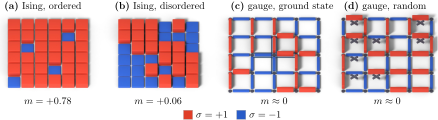

Advanced Quantum Materials 2027 · All lectures · Lecture notes
Session 10. Machine Learning Quantum Materials
10.6b The hard case, the Ising gauge theory
In the first part we saw that for the Ising model a local order parameter is enough. Let us now take a model where it is not.
The hard case, the Ising gauge theory. Now we replace the coupling between pairs with a plaquette interaction, which is the product of the four spins around each elementary square of the lattice,
\[H_{\rm IGT} = -J\sum_{p} \prod_{i \in \partial p} \sigma_i, \tag{10.10}\]
where the sum runs over the plaquettes \(p\) and the product runs over the four spins on the four bonds around that plaquette. Note that here the spins live on the links of the lattice and not on its sites. At zero temperature the ground state satisfies \(\prod_{i\in\partial p}\sigma_i = +1\) on every plaquette, but this constraint is satisfied by a macroscopic number of different spin configurations. For instance, if we flip the four spins on the bonds that meet at a single vertex, every plaquette product stays the same, because each of the four plaquettes that touch this vertex contains exactly two of these four bonds and every other plaquette contains none of them. This local gauge transformation is what gives the model its name. At infinite temperature, instead, plaquettes with product \(+1\) and \(-1\) appear with equal probability. Both the ordered configurations, which satisfy the constraint, and the disordered ones can look, one by one, like a featureless \(50/50\) mix of up and down spins. As a result, the naive order parameter (10.9), which worked perfectly for the Ising model, is useless here. The reason is that no local quantity can distinguish the two regimes, which is the same obstruction that forced sessions 3 and 4 to leave local order parameters and to use Chern numbers and Zak phases. What (10.10) reproduces, in a simple classical model, is this feature of those earlier examples. Note that in two dimensions this model has no true transition and no topological order at finite temperature, and only its ground state at zero temperature has topological order. On a finite system, however, the low-temperature and high-temperature regimes are clearly different, and no local quantity can distinguish them, which is what makes this model a good test for the classifier.
A convolutional neural network, trained on labeled configurations at low \(T\) and high \(T\) with the same supervised architecture as before, succeeds where the naive summary statistic fails. In practice, it learns a nonlocal function of the spin configuration, which plays the role that a topological invariant would play analytically. We should state one more physical point carefully, since it is easy to mix up. The two regimes here are separated by a size-dependent crossover and not by a true phase transition at finite temperature, so there is no sharp \(T_c\) that the result converges to as the system grows, unlike the true Ising transition of (10.9). What makes the machine-learning result useful is that the trained network has only seen one system size during training, and it still captures this crossover correctly for other sizes and temperatures on which it was never trained. The slides show it trained at a single size and evaluated from \(L = 4\) up to \(L = 28\). Figure 10.5 shows the easy and the hard case next to each other in real space, which is where the difference between them can be seen.

In the Ising gauge theory we flip the four bonds that meet at one vertex. How does this change the plaquette products?
Show the answer
The correct option is B.
Flipping two spins of a plaquette gives \((-1)^2=1\), so the product stays the same. This local gauge transformation makes the ground state degenerate by a macroscopic number.
The trained classifier for the gauge theory does not give a transition that becomes sharper as \(L\) grows. Why?
Show the answer
The correct option is C.
In two dimensions the gauge theory has order only at \(T=0\). The crossover moves with the size of the system, so there is no sharp \(T_c\) to converge to.